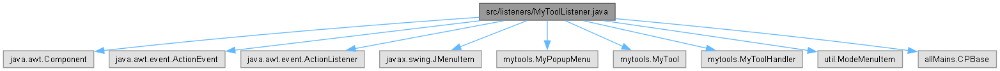

|
CirclePack-JA
doc with Opus 4.6
|
|
CirclePack-JA
doc with Opus 4.6
|
import java.awt.Component;import java.awt.event.ActionEvent;import java.awt.event.ActionListener;import javax.swing.JMenuItem;import mytools.MyPopupMenu;import mytools.MyTool;import mytools.MyToolHandler;import util.ModeMenuItem;import allMains.CPBase;
Go to the source code of this file.
Classes | |
| class | listeners.MyToolListener |
| This is an abstract class for listeners created by MyToolHandlers. More... | |
Packages | |
| package | listeners |